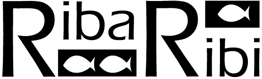

| Cilj Udruge je unaprijediti društveni, kulturni, ekološki i turistički identitet mjesta otoka Unije. Udruga će nastojati oživjeti i očuvati stare tradicije, zanate i znanja, potaknuti proizvodnju i uporabu zdrave hrane, promicati umjetničko i kreativno izražavanje i poduzimati ostale aktivnosti koje mogu doprinijeti ukupnoj kvaliteti otočke turističke ponude. |
OIB: 27213825254 | MB: 2890976 | Jagodnjak 14, Zagreb |